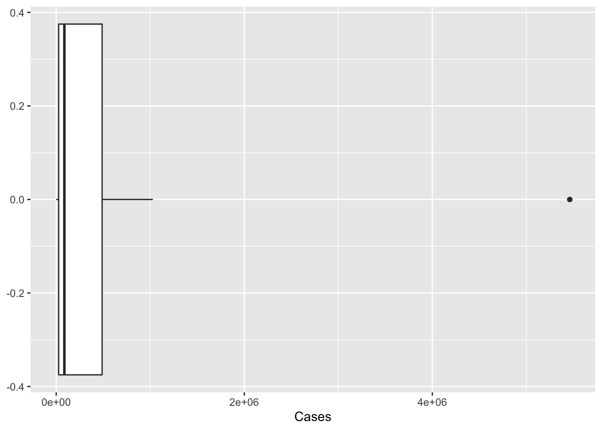

library(tidyverse)
library(ggplot2)
knitr::opts_chunk$set(echo = TRUE, warning=FALSE, message=FALSE)Challenge 5 Solutions
challenge_5
railroads
cereal
air_bnb
pathogen_cost
australian_marriage
public_schools
usa_hh
Introduction to Visualization
Challenge Overview
Today’s challenge is to:
- read, clean, and tidy data and then…
- create at least two univariate visualizations
- try to make them “publication” ready
- Explain why you choose the specific graph type
- Create at least one bivariate visualization
- try to make them “publication” ready
- Explain why you choose the specific graph type
There is even an R Graph Gallery book to use that summarizes information from the website!
The cereal dataset includes sodium and sugar content for 20 popular cereals, along with an indicator of cereal category (A, B, or C) but we are not sure what that variable corresponds to.
cereal<-read_csv("_data/cereal.csv")Univariate Visualizations
I am interested in the distribution of sodium and sugar content in cereals, lets start by checking out a simple histogram - binned into approximately 25 mg ranges. I do this by setting bins equal to max minur min of the variable, or 14 bins.
ggplot(cereal, aes(x=Sodium)) +
geom_histogram(bins=14)It looks like there are some outliers while most cereals are more clumped together between 100 and 200 mg. Unfortunately, we can’t automatically label outliers, but there is a commonly used trick to add in labels that I can never get to work for a single boxplot. So, I use it for grouped data in the example below, but am cheating by using the car package to label the outliers for the single boxplot - maybe one of you can find a better way!
car::Boxplot(cereal$Sodium,
data=cereal,
id=list(labels=cereal$Cereal),
cex=0.2)[1] "Frosted Mini Wheats" "Raisin Bran" is_outlier <- function(x) {
return(x < quantile(x, 0.25) - 1.5 * IQR(x) | x > quantile(x, 0.75) + 1.5 * IQR(x))
}
cereal %>%
mutate(Sugar = Sugar * 15) %>%
pivot_longer(cols=c(Sodium, Sugar),
names_to = "content",
values_to = "value")%>%
group_by(content)%>%
mutate(outlier = if_else(is_outlier(value), Cereal, NA_character_)) %>%
ggplot(., aes(x = content, y = value, color=factor(content))) +
geom_boxplot(outlier.shape = NA) +
theme(legend.position = "none") +
geom_text(aes(label = outlier), na.rm = TRUE, show.legend = FALSE) +
scale_y_continuous("Milligrams (Sodium)",
sec.axis = sec_axis(~ . /15, name = "Milligrams (Sugar)")
)
How about sugar? We can set the number of bins to cover 2 grams of sugar, or 9.
ggplot(cereal, aes(x=Sugar)) +
geom_histogram(bins=9)It looks like cereals are more closely grouped with respect to sugar content - and a boxplot indicates no true outliers.
ggplot(cereal, aes(y = Sugar)) +
geom_boxplot()Bivariate Visualization(s)
Are cereals high in sodium low in sugar, or vice versa? To answer this question, lets check out a scatterplot.
ggplot(cereal, aes(y=Sugar, x=Sodium)) +
geom_point()It doesn’t look like there is a systematic relationship. However, this might be different if we added in the types A and C. Also, Raisin Bran seems to be high in both!
This dataset includes the total number of cases and total estimated cost for the top 15 pathogens in 2018.
pathogen<-readxl::read_excel(
"_data/Total_cost_for_top_15_pathogens_2018.xlsx",
skip=5,
n_max=16,
col_names = c("pathogens", "Cases", "Cost"))
pathogenUnivariate Visualizations
Lets check out the distribution of cost and number of cases. There are only 15 observations - even fewer than the number of cereals, and the data are highly skewed. Will the same sorts of visualizations work?
ggplot(pathogen, aes(x=Cases)) +
geom_histogram()
ggplot(pathogen, aes(x=Cases)) +
geom_histogram()+
scale_x_continuous(trans = "log10")
ggplot(pathogen, aes(x=Cases)) +
geom_boxplot()
ggplot(pathogen, aes(x=Cases)) +
geom_boxplot()+
scale_x_continuous(trans = "log10")

The histogram isn’t ideal, we can see the single outlier - but it is hard to get a grasp on the number of cases of pathogens with lower case counts. Perhaps if we rescaled the number of cases to a log or some other scaling function. As we see below, the logging of the x axis is much more revealing.
What happens when we graph costs?
ggplot(pathogen, aes(x=Cost)) +
geom_histogram()
ggplot(pathogen, aes(x=Cost)) +
geom_histogram()+
scale_x_continuous(trans = "log10")

Bivariate Visualization(s)
Given what we saw above, lets try a logged and unlogged scatterplot for Cases vs Costs.
ggplot(pathogen, aes(x=Cases, y=Cost, label=pathogens)) +
geom_point() +
scale_x_continuous(labels = scales::comma)+
geom_text()
ggplot(pathogen, aes(x=Cases, y=Cost, label=pathogens)) +
geom_point()+
scale_x_continuous(trans = "log10", labels = scales::comma)+
scale_y_continuous(trans = "log10", labels = scales::comma)+
ggrepel::geom_label_repel()

In 2017, Australia conducted a postal survey to gauge citizens’ opinions towards same sex marriage: “Should the law be changed to allow same-sex couples to marry?” The table provided by the Australian Bureau of Statistics includes estimates of the proportion of citizens choosing to 1) vote yes, 2) vote no, 3) vote in an unclear way, or 4) fail to vote. These results are aggregated by Federal Electoral District, which are nested within one of 8 overarching Electoral Divisions. See Challenge 3 for more details.
vote_orig <- readxl::read_excel("_data/australian_marriage_law_postal_survey_2017_-_response_final.xls",
sheet="Table 2",
skip=7,
col_names = c("District", "Yes", "del", "No", rep("del", 6), "Illegible", "del", "No Response", rep("del", 3)))%>%
select(!starts_with("del"))%>%
drop_na(District)%>%
filter(!str_detect(District, "(Total)"))%>%
filter(!str_starts(District, "\\("))
vote<- vote_orig%>%
mutate(Division = case_when(
str_ends(District, "Divisions") ~ District,
TRUE ~ NA_character_ ))%>%
fill(Division, .direction = "down")
vote<- filter(vote,!str_detect(District, "Division|Australia"))
vote_long <- vote%>%
pivot_longer(
cols = Yes:`No Response`,
names_to = "Response",
values_to = "Count"
)Univariate Visualization(s)
I think I will start out by graphing the overall proportion of Australian citizens who voted yes, no, etc. That requires me to recreate the proportions information we discarded when we read in the data!
vote_long%>%
group_by(Response)%>%
summarise(Count = sum(Count))%>%
ggplot(., aes(x=Response, y=Count))+
geom_bar(stat="identity")Hm, I see a few issues. I would like to reorder the Yes and No folks (who voted) and clearly distinguish them from No Response. Plus maybe label the bars with the % vote (or total numbers?) and the axis with the other value.
vote_long%>%
mutate(Response = as_factor(Response),
Response = fct_relevel(Response, "Yes", "No", "Illegible"))%>%
group_by(Response)%>%
summarise(Count = sum(Count))%>%
ungroup()%>%
mutate(perc = Count/sum(Count))%>%
ggplot(., aes(y=perc, x=Response))+
geom_bar(stat="Identity", alpha=.75) +
scale_y_continuous(name= "Percent of Citizens",
label = scales::percent) +
geom_text(aes(label = Count), size=3, vjust=-.5)Bivariate Visualization(s)
This is a new data set from air bnb, lets check it out.
airb<-read_csv("_data/AB_NYC_2019.csv")
summarytools::dfSummary(airb)Univariate Visualizations
Bivariate Visualization(s)
The railroad data contain 2931 county-level aggregated counts of the number of railroad employees in 2012. Counties are embedded within States, and all 50 states plus Canada, overseas addresses in Asia and Europe, and Washington, DC are represented. See challenges 1 and 2 for more information.
railroad<-readxl::read_excel("_data/StateCounty2012.xls",
skip = 4,
col_names= c("state", "delete", "county",
"delete", "employees"))%>%
select(!contains("delete"))%>%
filter(!str_detect(state, "Total"))
railroad<-head(railroad, -2)%>%
mutate(county = ifelse(state=="CANADA", "CANADA", county))Lets create some numerical variables that we can visualize!
railroad<- railroad%>%
group_by(state)%>%
mutate(state_employees = sum(employees),
state_countries = n_distinct(county))Univariate Visualizations
Bivariate Visualization(s)
This is another new dataset.
schools<-read_csv("_data/Public_School_Characteristics_2017-18.csv")
summarytools::dfSummary(schools)